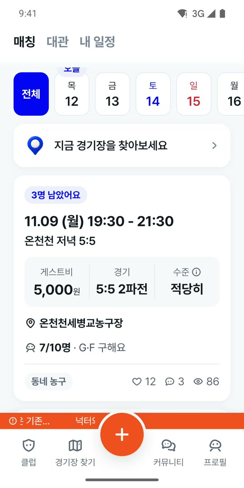
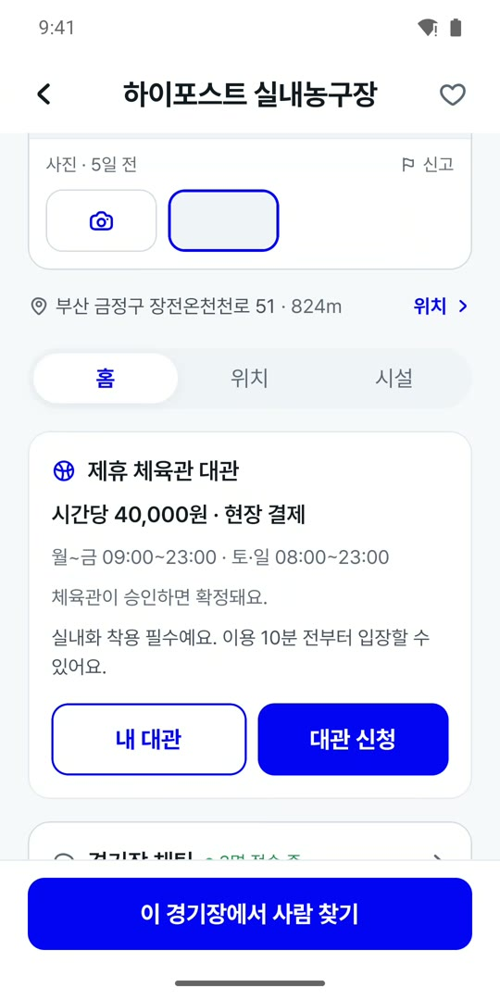
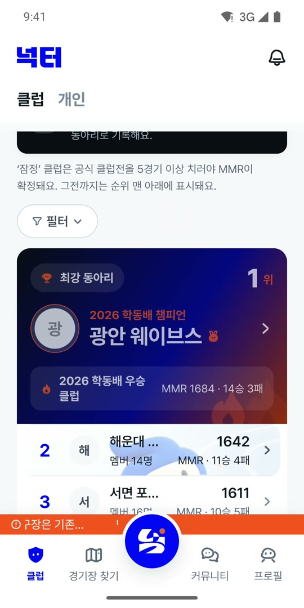
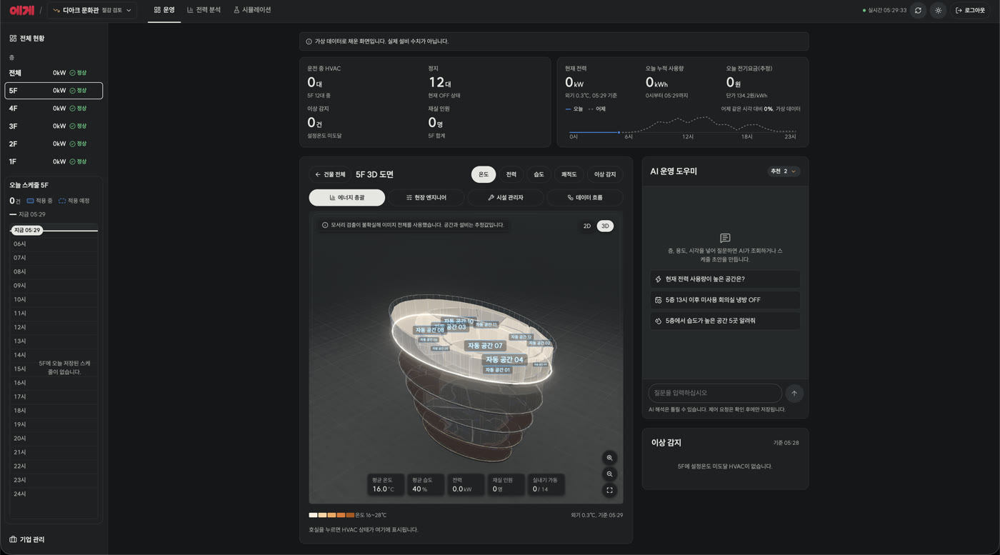
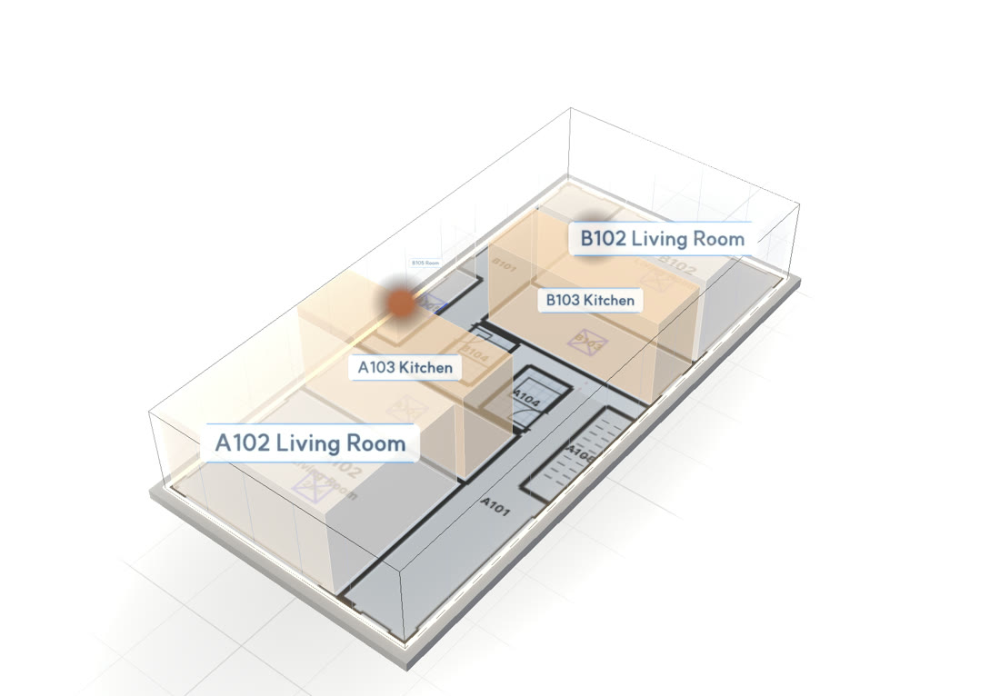
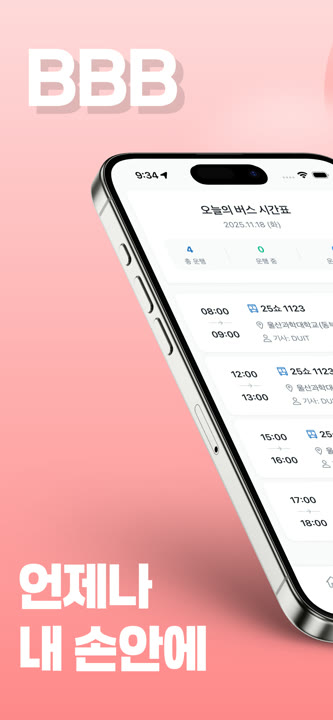
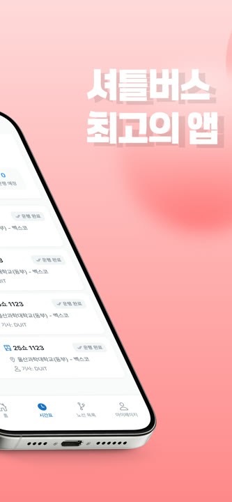
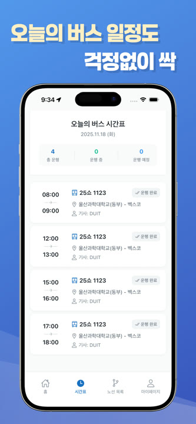

김태훈Full-Stack Developer
지원당근 2027 프로덕트 빌더 인턴십, 커뮤니티 팀(Software Engineer, Backend)

| 이메일 | taehun@pusan.ac.kr |
| 전화 | 010-3343-8636 |
| 포트폴리오 웹 | https://taehun2123.github.io/ (시연 영상 3개 포함) |
| GitHub | https://github.com/taehun2123 |
| 이력서 PDF | https://taehun2123.github.io/assets/kim-taehun-resume.pdf |
농구 동호회 운영진은 게스트 모집, 친선전 상대 섭외, 체육관 대관을 단톡방과 전화로 조율합니다.
창업팀 조사에서 운영진 1명이 경기 1회 일정을 확정하는 데 1시간 이상을 썼습니다.
2026-08-19 App Store와 Google Play에 출시해 95일째 운영 중입니다.
가입 회원은 485명입니다.
| App Store | https://apps.apple.com/kr/app/id6801552960 |
| Google Play | https://play.google.com/store/apps/details?id=com.pnu.basketball |
| 웹 앱 | https://app.nuktu.com |
| 제휴 체육관 웹 | https://partner.nuktu.com |
| 서비스 소개 | https://nuktu.com |
| 시연 영상 | https://taehun2123.github.io/assets/video/nuktu-demo.mp4 (앱 화면 녹화 109초, 기능 설명 자막) |
| 소스 코드 | NUKTU 조직 비공개 저장소(Backend, Frontend, Partner, docs) |



| 저장소 | 본인 담당 | 본인 / 전체 커밋(병합 제외) | 병합 PR |
|---|---|---|---|
| App·Web | React Native(Expo) 화면 58개, iOS·Android·웹 동시 배포, OTA 업데이트 | 1,098 / 1,255 (87%) | 687 / 795 |
| Backend | 매칭 큐, 모집글, 클럽, 대관, 채팅, 푸시 알림, 커뮤니티 API와 관리자 경기장 관리 | 643 / 883 (73%) | 459 / 611 |
| Partner | 제휴 체육관 앱·웹: 대관 예약, 입금 확인, 대관현황표 사진 등록, 기기별 푸시 | 137 / 140 (98%) | 78 / 81 |
| docs | 팀 문서 사이트 구축, 문서 검사 자동화 | 586 / 666 (88%) | 290 / 349 |
팀은 개발 3명, 디자이너 2명입니다.
다른 개발 팀원 2명은 장애 전환 서버 최초 구축과 CI 초기 구성, 경기장 상황 알리기·채팅 알림·회원 경기장 추가 승인을 담당했습니다.
디자이너 2명은 로고, 스토어 이미지, 웹 배색 조합, 마케팅 포스터를 담당했습니다.
운영 구성은 Mac mini blue/green 배포, 울산 스탠바이 복제 서버, 자체 CI 러너 4대입니다.
본인은 운영 중 장애 대응, 배포 시간 단축, CI 러너 증설을 맡았습니다.
설계와 코드 리뷰는 직접 하고, 구현은 AI 코딩 도구(Claude Code)로 보조했습니다.
병합 전 테스트와 CI 검사를 통과시켰습니다.
| 지표 | 값 | 기준 |
|---|---|---|
| 가입 회원 | 485명 | 2026-11-22 |
| 운영 기간 | 95일 | App Store 출시 2026-08-19 ~ 2026-11-22 |
| 주간 활동 회원 | 40명 | 2026-11-16 ~ 11-22 조회·채팅·작성·신청 회원(관리자 제외), 주별 18명 → 23명 → 38명, 최근 30일 62명 |
| 완료 경기 | 11건 | 2026-08-19 ~ 11-21 운영 DB, 11월 5건, 수락된 참가 신청 22건(17명) |
| 등록 데이터 | 경기장 139곳 | 2026-11-18 운영 DB, 개설 클럽 41개, 모집글 62건 |
사람이 읽기 쉬운 문서 형태(Wiki와 같은 형태)로 웹 사이트를 만들고, 저장소의 Docs들을 참조하여 빌드, 배포, 검사를 자동화했습니다.
| 자동화 | 내용 | 결과 |
|---|---|---|
| 문서 통합 | 저장소 4곳의 Docs를 참조해 사람이 읽기 쉬운 Wiki 형태의 VitePress 사이트 1곳으로 수집 | 팀원이 한 주소에서 검색 |
| 빌드 | main 반영, 코드 저장소의 문서 변경 알림(repository_dispatch), 매시 17분 예약 실행으로 시작 | 수동 빌드 0회 |
| 배포 | 서버 LaunchAgent가 300초마다 최신 성공 빌드(약 22MB)를 받아 설치 | main 반영 후 최대 5분 |
| 검사 | PR마다 링크·앵커·병합 충돌과 스타일 규칙 5종 검사, 검사기 단위 테스트 | 링크 오류가 있으면 병합 전 검사 실패 |
| 접근 관리 | Cloudflare Access 이메일 인증(세션 24시간, 허용 이메일 최대 50개) | 비공개 문서를 팀 전체가 열람 |
| 작성 규칙 | 저장소 6곳의 AGENTS.md에 문서 형식(요약, 비교 기준, 다음 작업)을 정해 팀원과 AI 에이전트가 같은 형식으로 작성 | 팀원과 AI 에이전트가 같은 형식 사용 |
이 구조를 Claude Code 플러그인 devdog-docs로 일반화해 공개: https://github.com/taehun2123/devdog
| 문제 | 변경 | 결과 |
|---|---|---|
| 글 재조회 시 조회 수 중복 증가 문제 | 조회자당 1행인 조회 기록 표(post_views)를 추가했습니다.첫 조회만 집계하고 작성자·운영진·비로그인은 제외합니다. | 재조회 시 조회 수 변화 없음. 이 수정이 만든 글 상세 500 장애도 다음 날 수정 |
| 운영 웹 체감 응답 1.5초 지연 문제 | 원인인 CORS 사전 요청(요청당 291~375ms)을 없애려고 Cloudflare Worker로 같은 도메인 /api 경유를 적용했습니다. | 로그인 요청 중앙값 276ms → 139ms, 사전 요청 0회 |
| 대관 문의 채널 분산·답변 지연 문제 | 매체에 링크 1개를 올리면 예약, 결제, 일정 배정을 한 페이지에서 처리하는 대관 신청 페이지를 만들었습니다. | 운영 반영 2026-11-13, 앱 대관 신청과 화면·단계 통일 |
| 장기 대관 일정 엑셀 사진 관리 문제 | 표 사진을 올리면 주간 일정으로 등록되는 기능을 만들었습니다. 인식 모델은 11개를 같은 사진으로 비교했습니다. | 바로 선 사진 17/17 정확, 장당 $0.0144 |
| 저속 회선 웹 첫 화면 90초 정지 문제 | 글꼴 로딩 오류 시에도 진입하도록 시작 조건을 바꿨습니다. 글꼴은 woff2 3종 부분 집합으로 축소하고 화면별 코드 분할을 추가했습니다. | 첫 화면 9,384KB → 2,360KB, 1.6Mbps 첫 글자 120초 내 미표시 → 12.0초 |
| AI 페르소나 점검 불편 216건 문제 | 가입·정착 과정을 AI 페르소나 8명으로 점검했습니다. 중복을 합쳐 102건으로 정리했습니다. 바로 고칠 항목을 위험도 순으로 PR 6건에 나눠 반영했습니다. | 102건 중 우선 항목 PR 6건 병합 |
후보가 2개 이상이면 비용, 성능, 운영 부담을 표로 비교하고 기술 선택 기록으로 남깁니다.
| 대상 | 비교한 후보 | 선택 | 이유 |
|---|---|---|---|
| 대관현황표 사진 인식 | Gemini, Claude, GPT 계열 모델 11개 | gemini-3-flash-preview | 17/17 정확한 모델 2개 중 장당 $0.0144로 최저가. Claude Sonnet은 $0.0344 |
| 사용자 글 자동 번역 | Papago, Google 번역, Gemini | Gemini | Papago는 최소 월 2만 원. Gemini는 기존 키 재사용, 현재 규모 월 $1 미만 추정 |
| 길찾기 소요 시간 | API 5개(TMAP, ODsay, 카카오모빌리티 등) | TMAP 단일(추천안) | 키 1개로 대중교통·차량·도보 3종 충족. 월 약 7,000원, 대안 조합은 최대 약 20만 원 |
| 웹 API 경유 | Cloudflare Worker, Pages 함수, 프록시 해제 | Worker | Pages 함수는 비로그인 IP 제한이 웹 사용자 전체에 적용됨. 프록시 해제는 서버 공인 IP 노출 |
| 앱 OTA 업데이트 | EAS Update, 자체 호스팅 서버 | EAS Update Free | 월 $0, MAU 1,000명까지 무료. 자체 호스팅은 사용자 규모 대비 구현·운영 부담 과다 |
| 웹 글꼴 제공 | Metro 자산, 정적 경로 woff2 | 정적 경로 woff2 + preload | Metro 기본 자산 확장자에 woff2 없음. 글꼴 5,388KB → 789KB |
기본 스택: Java 17, Spring Boot 3.2, PostgreSQL 17(스트리밍 복제), Redis 7.4, Flyway(V0~V190), STOMP WebSocket, React Native 0.86(Expo SDK 57), TypeScript, Cloudflare Workers·Pages, Docker, GitHub Actions, Sentry.
| 장애 | 원인 | 조치 | 전후 수치 |
|---|---|---|---|
| 큐 매칭 요청 6초 대기 2026-08-21, 부하 조건에서 발견 | 후보자마다 요약 조회를 따로 호출하는 N+1 조회. 지역 전체 매칭을 요청 스레드에서 계산 | 일괄 조회, 개수 전용 쿼리, 등록 티켓 기준 즉시 매칭과 60초 주기 지역 배치 분리 | 요청당 SQL 1,259개 → 25개, 응답 6.30초 → 0.51초(테스트 데이터, 매칭 성립 시 1.27초) |
| 커뮤니티 글 상세 500 2026-11-07 | 조회 기록 쿼리의 @Modifying(clearAutomatically = true)로 먼저 조회한 게시글이 준영속 상태가 되어 지연 로딩 실패 | 조회 기록 후 게시글 조회로 순서 변경, 통합 테스트 추가, 리뷰 기준을 장애 기록에 추가 | 로그인 회원 글 상세 500 → 200, 영향 약 20시간 |
| 스탠바이 서버 기동 실패 2026-11-14 | 서버 시작 시 백필의 SELECT ... FOR UPDATE가 읽기 전용 복제본에서 실패 | SHOW transaction_read_only가 on이면 백필 생략. pg_is_in_recovery()는 복제 상태만 판별해 제외 | 재시작 2,973회 → 0회, 기동 17.1초. 경고를 3일 넘게 놓쳐 스탠바이 응답 5분 주기 점검 추가 |
| 다른 기기 로그인 시 세션 덮어쓰기 2026-10-30 | 계정당 리프레시 토큰 1개만 저장. 운영 Redis는 AOF 꺼짐 상태 | 저장 키를 기기 세션 단위(refresh_token:<userId>:<sid>)로 분리, Redis AOF everysec 전환 | 갱신 거부 7건 해소, 배포 전후 세션 키 24개 유지 |
LG전자 ES사업본부(BECON 빌딩 제어 솔루션)가 출제한 과제는 "건물 운영자가 공간과 설비 상태를 직관적으로 파악하기 어렵다"였습니다.
구현 전에 운영자 문제 자료 155건을 조사해 이 문제를 검증했습니다.
3일 해커톤에서 도면 기반 3D 트윈과 AI 운영 도우미를 만들어 배포까지 마쳤고, PNU × AWS Maestro AI 해커톤 최우수상(2026-11-21)을 받았습니다.
| 시연 영상 | https://taehun2123.github.io/assets/video/ege-demo.mp4 (3분 59초) |
| 소스 코드 | https://github.com/Energy-gate (Frontend, Lambda, docs 공개) |


| 항목 | 조사 결과 |
|---|---|
| 조사 범위 | 국내 자료, 해외 업계 설문, 정성·정량 연구 155건을 검토해 99건 수록. AI 에이전트 4개로 수집하고 핵심 문장 35건은 원문과 직접 대조 |
| 출처 목록 | Energy-gate/docs 운영자 문제 출처 목록 |
| 상태 파악 경로 | 운영자는 BMS보다 재실자 민원으로 문제를 파악. 온도가 최대 민원이라는 시설관리자 응답 68%(BOM 2014, 134~318명) |
| 원인 | 데이터 분산, 쓰기 어려운 도구와 과다 경보, 낭비 위치 미파악, 인력·숙련 부족. BEMS 기능을 잘 활용하는 학교 32%(김성중·이승민 2022, 학교 43곳) |
| 낭비 | 예약 시간 중 실제로 빈 회의실 31.2%(Shokrollahi 외 2025, 스웨덴 회의실 7개) |
| 설계 반영 | 3D 화면과 자연어 질의를 운영자가 직접 요구한 조사는 없음. 2D 평면 보기를 요구사항 검토 항목에 추가하고 검증 지표 후보를 민원 호실 확인 시간과 빈 공간 운전 탐지량으로 설정 |
| 대상 | 근거 | 설계 반영 |
|---|---|---|
| 건물 운영자 (주 사용자) | 시설관리자, 설비 엔지니어, 관리사무소장, 학교·공공기관 시설 담당자. 기계설비유지관리자의 72%가 50대 이상(48,087명, 2024-03 기계설비 경력수첩 집계) | 본문 16px, 보조 글자 14px 이상, 상태는 색·아이콘·글자 중 2가지 이상, AI 답변 3문장(결론, 근거, 조치) |
| 판매사 (BECON 서비스 팀) | 서비스를 자사 제품에 붙여 고객사에 제공하는 고객 | 도면 등록과 3D 트윈 구성은 판매사가 맡고 고객사는 관제에 집중 |
| 정비 기술자 (확장 사용자) | 고장 의심 설비를 현장에서 찾아야 함 | 고장 의심 HVAC를 트윈 위에 겹쳐 표시 |
| 항목 | 선택 | 다른 선택지 |
|---|---|---|
| 도입 흐름 | 판매사가 기업을 만들고 건물·도면을 등록한 뒤 기업 코드 전달. 고객사 사용자는 코드로 가입해 소속 기업의 건물만 관제 | 허용 이메일 목록 관리 |
| 고객사 역할 | 고객사 관리자(정보 수정, 구성원 관리)와 운영자(관제) 분리 | 고객사 사용자 동일 권한 |
| 기업 코드 | 기업당 1개, 만료일과 재발급, 가입 후 이메일 인증 | 사용자별 1회용 코드, 관리자 승인 |
| 보안 점검 | 대기업 고객 요구 기준 점검. 로그인, 건물 소속 검사, 저장소 비공개, 비밀값 보관 등 기본 통제 7개 확인, MFA·SSO·WAF 등 보완 8항목 정리 | - |
| 대상 | 비교한 후보 | 선택과 이유 |
|---|---|---|
| 규정 문서 검색 저장소 | S3 Vectors, OpenSearch Serverless, Aurora pgvector | S3 Vectors. 문서 7건 규모에서 월 $0.01 미만. OpenSearch Serverless 최소 월 $214~428, Aurora pgvector 최소 월 $73. 검색 중앙값 0.345초 |
| AI 답변 길이 제어 | 초과 답변 재작성, 4문장 완화, 구조화 응답 | 구조화 응답. 재작성은 1~2초 지연되고 긴 답변이 먼저 표시됨. 4문장 완화는 읽기 부담 유지. 3문장 초과 3~12건 → 0건 |
| 도면 실내기 인식 | 비전 언어 모델, 공개 IFC 학습, YOLO 미세조정 | YOLO11s. 비전 언어 모델은 좌표 정밀도가 낮고 호출마다 비용 발생. 처음 보는 건물 6동 재현율 0.339 → 0.758(대수 합계 0.288 → 0.566) |
| API 함수 구성 | 기능별 함수 9개, 조회·관리 API 통합 | 통합. 화면마다 콜드 스타트 9회로 첫 호출 2.6~2.9초. 통합 후 화면당 콜드 스타트 1회, 계산 456ms → 52ms(로컬 측정) |
4명 팀의 팀장을 맡았습니다.
화면, API, 도면 인식 모델은 본인이 맡고 three.js 3D 화면 표현, EnergyPlus 계산 서버, 기상청 연동은 팀원이 맡도록 나눴습니다.
운영자 문제 조사 결과로 구현 범위를 정했습니다.
| 영역 | 본인 담당 | 본인 / 전체 커밋(병합 제외) |
|---|---|---|
| Frontend | React 19 운영자 화면(전체 현황, 건물 운영, 전력 분석, 시뮬레이션, 도면 편집) | 95 / 122 (78%) |
| Lambda | 조회·관리 API, WebSocket AI 응답 스트리밍, 판매사·고객사 구조, 규정 문서 검색 | 50 / 75 (67%) |
| ML | 도면 실내기 기호 인식 YOLO11s v1~v9 학습과 배포(SageMaker) | 14 / 15 |
학생은 통학버스 지연과 정류장 변경을 미리 확인하기 어려웠습니다.
기존 위치 서비스는 버스마다 단말기를 설치해야 해서 대여 버스에는 적용하기 어려웠습니다.
2024년 버스 탑재 IoT 단말기 방식으로 시작해 2025년 운전자 앱 GPS 방식으로 전환했습니다.
2025-11 CoShow 2025에 전시하고 Android 앱 v1.0.6을 배포했습니다.
| 2024 백엔드 | https://github.com/Hardware-BBB-App/BackEnd |
| 2025 백엔드 | https://github.com/BBB-bus-buddy-buddy/App-Backend |
| 시연 영상 | https://taehun2123.github.io/assets/video/bbb-demo.mp4 (4분) |



| 버전 | 팀 | 본인 담당 | 본인 / 전체 커밋(병합 제외) |
|---|---|---|---|
| 2024 하드웨어 | 5명 | Google OAuth2·JWT 인증, 학교 이메일 인증, 단말기 WebSocket 위치 수신, CI/CD | 백엔드 181 / 255 (71%) |
| 2025 소프트웨어 | 3명 | 백엔드 재구성, React Native 승객 앱 전체, 자동 탑승 감지 서버 로직, 배포. 운전자 앱과 관리자 웹은 팀원 담당 | 백엔드 65 / 130 (50%) 승객 앱 23 / 23 (100%) |
| 지표 | 값 |
|---|---|
| 개발·운영 기간 | 2024-03 개발 시작 ~ 2025-11 CoShow 2025 전시 |
| 배포 | Android APK v1.0.6(2025-11-19), GitHub 릴리스 다운로드 22회 |
| 수상 | 2024 소프트웨어개발 캡스톤디자인 경진대회 은상(울산과학대학교 총장, 2024-11-08) |
| 문제 | 변경 |
|---|---|
| 대여 버스 단말기 설치 불가 문제 | 2025 버전은 운전자 앱 GPS(2초 주기)로 위치를 수집해 버스에 설치하는 기기를 없앴습니다. 본인은 위치를 받아 처리하는 서버와 승객 앱을 맡았습니다. |
| 승객 탑승 수동 입력 문제 | 승객 앱이 10초마다 위치를 보내고 서버가 가장 가까운 버스와의 거리로 판정합니다. 50m 이내 2회 연속이면 탑승, 100m 초과 2회 연속이면 하차입니다. |
| 승객 앱 버스 상태 미표시 문제 | 이벤트 발행만 있고 @EventListener가 없던 결함을 찾아 리스너를 추가했습니다.승객 앱에 3초 주기로 버스 상태가 전달됩니다. |
| 대상 | 선택 | 이유 |
|---|---|---|
| 위치 저장 방식 | 버스별 최신값 메모리 보관 후 주기 배치 저장 | 수신마다 DB에 쓰던 방식을 버스당 주기 1회 쓰기로 축소 |
| 서비스 간 호출 | Spring 이벤트 발행 | 승객·운전자·버스 서비스 간 직접 호출로 생긴 순환 참조 제거(2025-04) |
| 위치 처리 분리 | BusLocationService 분리 | 825줄 BusService에서 위치 수신·정류장 판정을 분리해 283줄로 축소(2024 백엔드, 2025-06) |